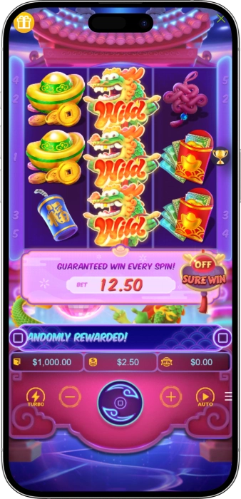
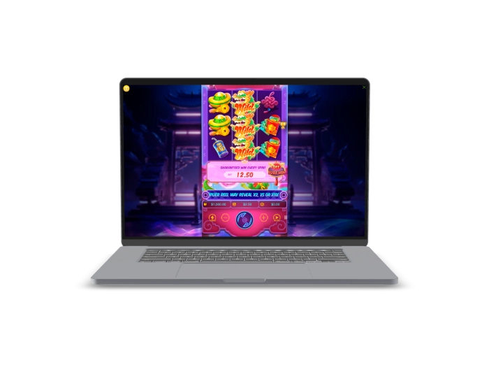

Exclusive welcome offer of
Exclusive welcome bonus of
Fortune Dragon Slot by Genesis — Play Free & Win Real
Top Casinos
Bonus Details
Casino
Bonuses
Rate
Free Spins
More Info
Get
Advantages
- Looking for a high-RTP online slot with oriental charm? Fortune Dragon by Genesis delivers certified 97.1% RTP, low-medium variance, and a rewarding Multiplier feature on a classic 3x3 grid. Here's why players choose this slot:
-
Certified RTP of 97.1% — one of the highest in classic video slots
-
Low-Medium variance — frequent wins with balanced payout potential
-
Multiplier feature boosts winnings directly in the base game
-
Classic 3x3 grid with 1 betway — simple, fast, and beginner-friendly
-
Min bet from $0.01 — accessible for all bankroll sizes
-
HTML5 technology — fully optimized for mobile and desktop play
- Fortune Dragon by Genesis combines classic slot simplicity with a rich oriental theme and proven math model. With an independently verified 97.1% RTP and Multiplier mechanics, this slot delivers genuine value for every spin.
Fortune Dragon App



About Fortune Dragon Slot
Fortune Dragon is a classic 3x3 video slot by Genesis Gaming, built around oriental fortune and dragon mythology. We offer this certified title featuring 97.1% RTP and low-medium variance for players who prefer consistent, reliable gameplay.
- Developed by Genesis Gaming with HTML5 cross-platform support
- RTP of 97.1% independently certified for fair play
- Classic 3x3 reel layout with integrated Multiplier feature
- Available across 19 global markets with real money play
Fortune Dragon operates with a certified 97.1% RTP and HTML5 technology ensuring fair, transparent outcomes on every spin. All game mechanics are built to industry-standard RNG protocols for verified random results.

We continue adding top-tier classic slots like Fortune Dragon for players who value high RTP and honest variance. Spin Fortune Dragon today and experience the legendary oriental luck of the dragon with every bet from just $0.01.
Fortune Dragon Gameplay & Slot Mechanics
Fortune Dragon Slot — Complete Gameplay Guide & Mechanics
Fortune Dragon by Genesis Gaming is a classic-style video slot built on a compact 3x3 reel grid with a single betway, delivering one of the most streamlined online slot experiences available today. At the heart of this game is a certified RTP of 97.1% — a figure that places Fortune Dragon firmly among the highest-returning slot machines in the classic reel category. Whether you are a seasoned spinner or a newcomer to online slots, the straightforward mechanics and generous math model make this game immediately accessible. The low-medium variance means wins arrive with satisfying frequency, while the Multiplier feature ensures those wins carry real weight when they land.
How Does Fortune Dragon Work? Understanding the 3x3 Grid
Fortune Dragon operates on a 3-reel, 3-row layout with exactly 1 active betway — a deliberate design choice by Genesis Gaming that returns the slot to its classic roots. Unlike modern video slots packed with cascading reels, cluster pays, or 100+ paylines, Fortune Dragon strips the experience down to its essentials. You place your bet, spin the reels, and the game evaluates the single central payline for matching symbols. This simplicity is not a limitation — it is the core appeal. Players who find complex mechanics overwhelming will appreciate the clean interface, while high-volume spinners benefit from rapid round speeds that make every session efficient and engaging. The reel symbols are drawn from classic oriental imagery: fiery dragons, jade coins, golden ingots, lucky red envelopes, and traditional Chinese fortune motifs that reinforce the theme with every spin.
What Is the RTP of Fortune Dragon and Why Does It Matter?
The Return to Player (RTP) percentage of 97.1% is the single most important mathematical metric in Fortune Dragon's design. To put this in perspective: for every $100 wagered across a statistically significant number of spins, the game is programmed to return $97.10 to players over the long term. This makes Fortune Dragon one of the top-performing classic slots on the market, outperforming the industry average RTP of approximately 95-96% found in most standard online slots. For players who prioritize value and longevity in their gaming sessions, this certified figure — built into the game's RNG core — translates to extended playtime and competitive winning potential even on a minimal budget.
Variance Profile: Low-Medium Means More Wins, More Often
Fortune Dragon carries a low-medium variance rating, which defines the risk-reward relationship of each spin. Low-medium variance slots produce wins more frequently than high-variance machines, though individual payouts tend to be moderate rather than life-changing jackpot amounts. For players managing their bankroll carefully, this variance profile is ideal: you experience a steady rhythm of wins that keeps your balance active across many spins, reducing the risk of rapid drawdowns. Combined with the 97.1% RTP, the low-medium variance of Fortune Dragon creates a slot that rewards consistent play rather than high-stakes gambling — a perfect fit for recreational players and those using bonus funds where wagering requirements demand extended play.
- High Win Frequency: Low-medium variance delivers above-average hit rates compared to high-variance competitors, meaning your balance fluctuates gently rather than swinging dramatically between dry spells and big wins.
- Budget-Friendly Stakes: With a minimum bet of just $0.01 per spin, Fortune Dragon is accessible to every player regardless of bankroll size. Maximum stakes reach $2 per spin, keeping the risk ceiling manageable for casual gaming sessions.
- Consistent Base Game Action: Unlike slots that hide their best features behind rare bonus triggers, Fortune Dragon's Multiplier operates within the base game itself — meaning enhanced wins are available on any spin without needing to unlock a special mode.
- Single Betway Clarity: The 1-betway structure eliminates confusion about active paylines and bet-per-line calculations. Your stake is your total bet — straightforward, transparent, and easy to manage across any session length.
The Multiplier Feature — Fortune Dragon's Core Mechanic
The standout feature in Fortune Dragon is its integrated Multiplier mechanic, which amplifies winning combinations beyond their base payout value. When a Multiplier symbol or qualifying win condition is triggered on the 3x3 grid, the resulting payout is multiplied by the designated factor, delivering enhanced returns without requiring a separate bonus round to activate. This keeps the gameplay tight and the excitement continuous — every spin carries the potential for a multiplied outcome that elevates a standard win into something significantly more rewarding. Genesis Gaming has engineered this feature to appear with sufficient frequency to meaningfully impact the session experience, striking the balance between anticipation and regularity that defines the slot's low-medium variance character.
Fortune Dragon Paytable — Symbol Values & Winning Combinations
The paytable of Fortune Dragon reflects its classic oriental design philosophy. Premium symbols — typically the dragon icon and high-value fortune symbols — deliver the strongest payouts when aligned on the central betway. Mid-tier symbols such as coins and lucky tokens provide moderate wins that sustain your balance during normal play, while lower-value symbols act as the base layer of the pay structure. Because the game uses a single betway, each symbol's value in the paytable directly corresponds to what you receive per spin stake, making the pay structure transparent and easy to evaluate. Players who study the paytable before their first real-money spin will quickly identify which symbol combinations offer the best return relative to the $0.01–$2 betting range.
| Symbol | Tier | Feature |
|---|---|---|
| Dragon | Premium | Top payout |
| Gold Coin | High | Multiplier trigger |
| Ingot | Mid | Standard win |
| Lucky Charm | Mid | Standard win |
| Low Symbol | Base | Frequent hit |
How to Play Fortune Dragon — Step-by-Step for New Players
Getting started with Fortune Dragon is one of the simplest onboarding experiences in online slot gaming. The HTML5-powered interface loads instantly on any device — desktop, tablet, or smartphone — without requiring software downloads or plugin installations. Once loaded, the game presents a clean layout with the 3x3 reel grid front and center, flanked by the bet controls and spin button.
- Step 1 — Set Your Bet: Use the bet controls to select your desired stake between $0.01 and $2.00 per spin. The single betway means your chosen stake is your entire wager for the round — no per-line adjustments needed.
- Step 2 — Review the Paytable: Before your first spin, click the paytable button to review symbol values, Multiplier trigger conditions, and payout calculations relative to your chosen bet size.
- Step 3 — Spin the Reels: Press the spin button to set the three reels in motion. The RNG engine — built to industry-standard specifications — generates a random outcome for each spin in milliseconds, with results displayed immediately on the 3x3 grid.
- Step 4 — Collect Wins or Trigger Multiplier: Matching symbols on the betway pay automatically. If a Multiplier condition is met, your win is enhanced accordingly before being credited to your balance.
- Step 5 — Use Autoplay (if available): For a hands-free session, activate the Autoplay function to run a pre-set number of spins automatically at your chosen stake — ideal for longer sessions where you want consistent wagering without manual input.
Mobile Compatibility — Play Fortune Dragon on Any Device
Fortune Dragon was built on HTML5 and JavaScript technology, ensuring full compatibility across all modern devices and operating systems. Whether you play on an iPhone, Android smartphone, iPad, or desktop browser, the game scales responsively to your screen size without any loss of functionality, visual quality, or gameplay speed. The 3x3 grid is particularly well-suited to mobile displays — its compact layout fits naturally on portrait-orientation smartphone screens, delivering a native-feeling slot experience without awkward scrolling or zoomed-out interfaces. No app download is required; simply launch the slot through your casino's mobile browser and the game loads in seconds via your Wi-Fi or mobile data connection.
Why Fortune Dragon Stands Out Among Classic Slots
In a market saturated with complex video slots featuring elaborate bonus systems, hundreds of paylines, and volatile math models, Fortune Dragon by Genesis Gaming occupies a valuable niche: the high-RTP classic slot that rewards patient, informed play. The 97.1% RTP puts it ahead of nearly every competitor in its class, the low-medium variance delivers sustainable sessions, and the Multiplier feature injects meaningful excitement into the base game without requiring a convoluted trigger sequence. For players seeking a reliable, well-engineered slot with genuine mathematical value and a beautifully executed oriental theme, Fortune Dragon delivers on every front.
Software Providers
Fortune Dragon Theme, Strategy & Winning Tips
Fortune Dragon Oriental Theme & Expert Winning Strategy Guide
The oriental theme of Fortune Dragon by Genesis Gaming is more than decorative — it is a carefully crafted narrative environment that draws on centuries of Chinese fortune symbolism to create an immersive slot atmosphere. Dragons in Chinese culture represent power, prosperity, and good fortune, making the dragon motif a natural fit for a game built around rewarding player returns. The visual palette of deep reds, golds, and greens — colors associated with luck and wealth in Asian tradition — creates an immediately recognizable aesthetic that resonates with players who appreciate culturally rich game design. Understanding the theme is not just about enjoyment; it also helps players engage more deeply with the symbol hierarchy and paytable logic that underpins the 97.1% RTP math model.
The Cultural Roots of Fortune Dragon's Design
Genesis Gaming drew extensively from classical Chinese iconography when designing Fortune Dragon. The central dragon figure — a majestic, flame-wreathed beast rendered in vibrant gold and crimson — serves as the game's premium symbol and thematic anchor. Supporting symbols include jade coins, which represent material wealth and prosperity in Chinese tradition; golden ingots (yuanbao), historically used as currency and associated with financial success; red envelopes (hongbao), traditionally filled with money and given as gifts during celebrations; and flame motifs, which in Chinese symbolism represent transformation, energy, and good fortune. Each symbol has been selected not arbitrarily, but as part of a cohesive cultural story that enhances the game's identity and differentiates it from generic classic slots that rely on generic fruit or card symbols.
- Dragon Symbol: The apex premium symbol in the game. Landing three dragons on the central betway triggers the highest available payout in Fortune Dragon's paytable, making this the most sought-after combination for real-money players.
- Gold Coins & Ingots: High and mid-tier symbols that form the backbone of consistent winning combinations. Their frequency of appearance relative to premium symbols reflects the low-medium variance design — these symbols keep the session alive between dragon wins.
- Fire & Flame Motifs: Visually dynamic symbols that reinforce the dragon narrative. In gameplay terms, these symbols occupy the mid-to-lower tier of the paytable, contributing to the steady win rhythm that defines the slot's variance profile.
- Classic Style Foundation: Despite the oriental theme overlay, Fortune Dragon retains the structural DNA of classic slot machines — clean layouts, straightforward win conditions, and zero unnecessary complexity — making it equally appealing to players who grew up on traditional land-based slot machines.
Fortune Dragon Betting Strategy — How to Maximize Your Session Value
While no strategy can alter the mathematical outcomes of an RNG-certified slot, intelligent bankroll management and bet-sizing discipline can significantly extend your playing time and maximize the practical benefit of Fortune Dragon's 97.1% RTP. The key principle is straightforward: the higher the number of spins you can sustain within your session budget, the closer your actual results will converge toward the theoretical RTP — giving the math model the opportunity to work in your favor. The low-medium variance profile of Fortune Dragon strongly supports this approach, as the game's design inherently supports longer sessions over volatile burst-play strategies.
- Flat Bet Strategy: The most recommended approach for Fortune Dragon. Choose a fixed stake — ideally 1-2% of your session budget per spin — and maintain it consistently. At $0.01 minimum, a $10 budget supports up to 1,000 spins, providing substantial exposure to the 97.1% RTP over a meaningful sample size.
- Session Budget Discipline: Set a fixed session budget before you begin and adhere to it regardless of outcomes. Fortune Dragon's low-medium variance means short-term results can diverge from the theoretical RTP — discipline prevents chasing losses during temporary cold streaks.
- Free Demo Practice: Use the free demo version of Fortune Dragon to familiarize yourself with the Multiplier trigger frequency, symbol appearance rates, and win rhythm before committing real money. The demo uses the identical RNG engine and math model as the real-money version, providing a genuine preview of actual gameplay behavior.
- Bonus Wagering Suitability: Fortune Dragon's 97.1% RTP and low-medium variance make it one of the most efficient slots for clearing casino bonus wagering requirements. High RTP minimizes theoretical loss during the wagering process, while low-medium variance reduces the risk of balance depletion before requirements are met.
Is Fortune Dragon a Good Slot for Beginners?
Fortune Dragon is arguably one of the best entry-point slots available for players new to online casino gaming. The single betway eliminates the confusion of multi-line bet calculations. The 3x3 grid reduces visual complexity to its absolute minimum. The $0.01 minimum bet removes financial pressure from the learning process. And the 97.1% RTP provides a mathematically generous environment in which to develop understanding of how slots function. New players who start with Fortune Dragon build foundational instincts — understanding variance, reading a paytable, managing a session budget — that transfer directly to more complex slot titles as their experience grows.
Fortune Dragon vs. Other Classic Slots — How Does It Compare?
When evaluated against the broader landscape of classic 3-reel online slots, Fortune Dragon distinguishes itself primarily through its RTP advantage. Most classic slot machines in online casinos operate at RTPs between 94-96%. Fortune Dragon's 97.1% certification represents a meaningful mathematical edge that, over hundreds of spins, translates to measurably better expected value for the player. The Multiplier feature also sets it apart from purely mechanical classic slots that offer no special game mechanics whatsoever — providing the excitement of a feature-enhanced game within the structural simplicity of a classic machine.
| Feature | Fortune Dragon | Avg Classic Slot |
|---|---|---|
| RTP | 97.1% | 94-96% |
| Variance | Low-Med | Low-High |
| Min Bet | $0.01 | $0.10–$0.20 |
| Feature | Multiplier | None / Wild |
| Layout | 3x3, 1 way | 3x3, 1-5 ways |
| Mobile | HTML5 ✅ | Varies |
Responsible Gaming While Playing Fortune Dragon
We are committed to providing Fortune Dragon as part of a responsible gaming environment. While the slot's 97.1% RTP and low-medium variance create favorable conditions, all casino games carry inherent risk and should be played for entertainment purposes only. We encourage all players to use available responsible gaming tools: deposit limits, session time reminders, loss limits, and self-exclusion options. If you ever feel that your gaming is becoming more than entertainment, support resources are available 24/7 through organizations including GamCare, BeGambleAware, and the National Council on Problem Gambling. Play smart, set your limits before each session, and enjoy Fortune Dragon as the engaging, well-crafted slot experience it was designed to be.
Frequently Asked Questions
Fortune Dragon by Genesis has a certified RTP of 97.1%, placing it among the highest-returning classic video slots available online. This means for every $100 wagered over a large number of spins, the game returns $97.10 on average to players, as verified by independent RNG certification standards.
The Multiplier feature in Fortune Dragon activates during the base game, multiplying qualifying wins by a set factor without requiring a separate bonus round trigger. When the Multiplier condition is met on the 3x3 grid, your payout is enhanced automatically — delivering amplified returns on any spin.
Yes, Fortune Dragon is available in free demo mode, allowing you to spin the reels using virtual credits without any real-money deposit. The demo uses the identical RNG engine and 97.1% RTP math model as the real-money version, making it perfect for learning the Multiplier feature before wagering real funds.
Fortune Dragon is fully mobile-compatible, built with HTML5 and JavaScript technology that runs natively in any modern mobile browser on iOS and Android devices. No app download is required. The 3x3 grid scales perfectly to smartphone screens, delivering the full slot experience on any device instantly.
The minimum bet for Fortune Dragon is $0.01 per spin, with a maximum stake of $2.00 per spin. This ultra-low entry point makes it one of the most accessible classic slots available, allowing players with any bankroll size to enjoy the full 97.1% RTP experience without significant financial exposure.
Fortune Dragon has low-medium variance, meaning it produces wins more frequently than high-variance slots, with moderate payout sizes per win. This balance creates longer, more sustainable gaming sessions with a steady rhythm of returns — ideal for players who prefer consistent action over rare large jackpots.
Fortune Dragon was developed by Genesis Gaming, a reputable software provider building certified HTML5 slots to industry-standard RNG protocols. The game features a verified 97.1% RTP and is available across 19 global markets, confirming its status as a trusted, transparent, and well-regulated online slot title.